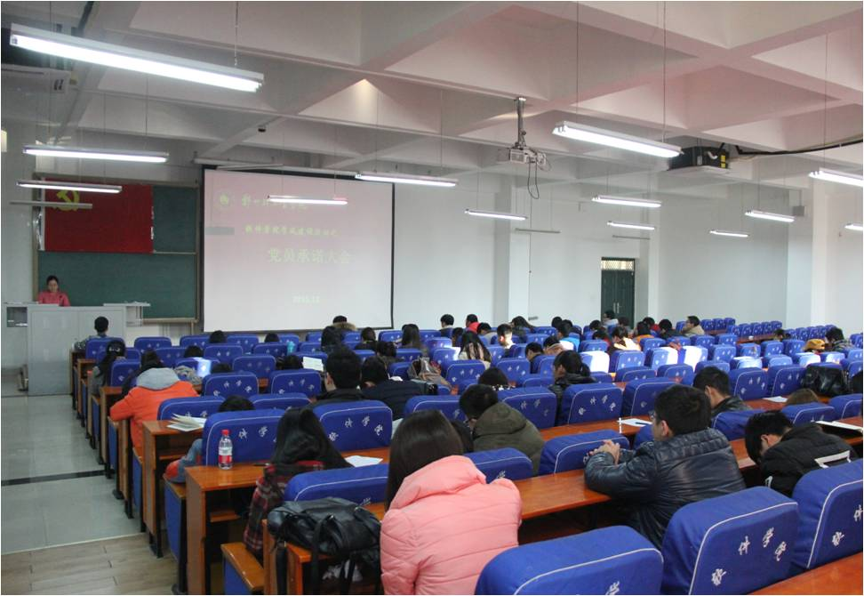

“我承诺，我践行”---软件学院召开学生党支部大会
发布部门： 发布时间：2015-12-25 浏览次数：160

为进一步扩大党员队伍，为党组织注入新鲜血液，软件学院于12月24日分别在软件楼219室和118室召开党支部大会。软件学院学生党支部全体党员、发展对象及党团工作室全体成员参加了此次大会。大会在庄严的国歌声中开始。党员发展对象逐个汇报了自己的入党意向、入党动机及对党组织的认识和自身需要改进的地方，表达了自己志愿加入中国共产党的决心。随后与会党员充分发表意见，通过无记名投票的方式进行表决。贾平老师宣读会议决议，并带领全体党员面向党旗庄严宣誓。接着她对新党员提出要求，希望他们在新的起点下，更加严格的要求自己，增强党员的责任意识，奉献意识，践行入党誓言，为党的事业奋斗终身。 通过此次大会，全体党员和预备党员都明确了自己的发展目标，表示会时刻严格要求自己，爱岗敬业、奉献进取，以良好的精神状态，充足的干劲，为社会主义的建设发展做出不懈努力，无愧于共产党员的光荣称号!